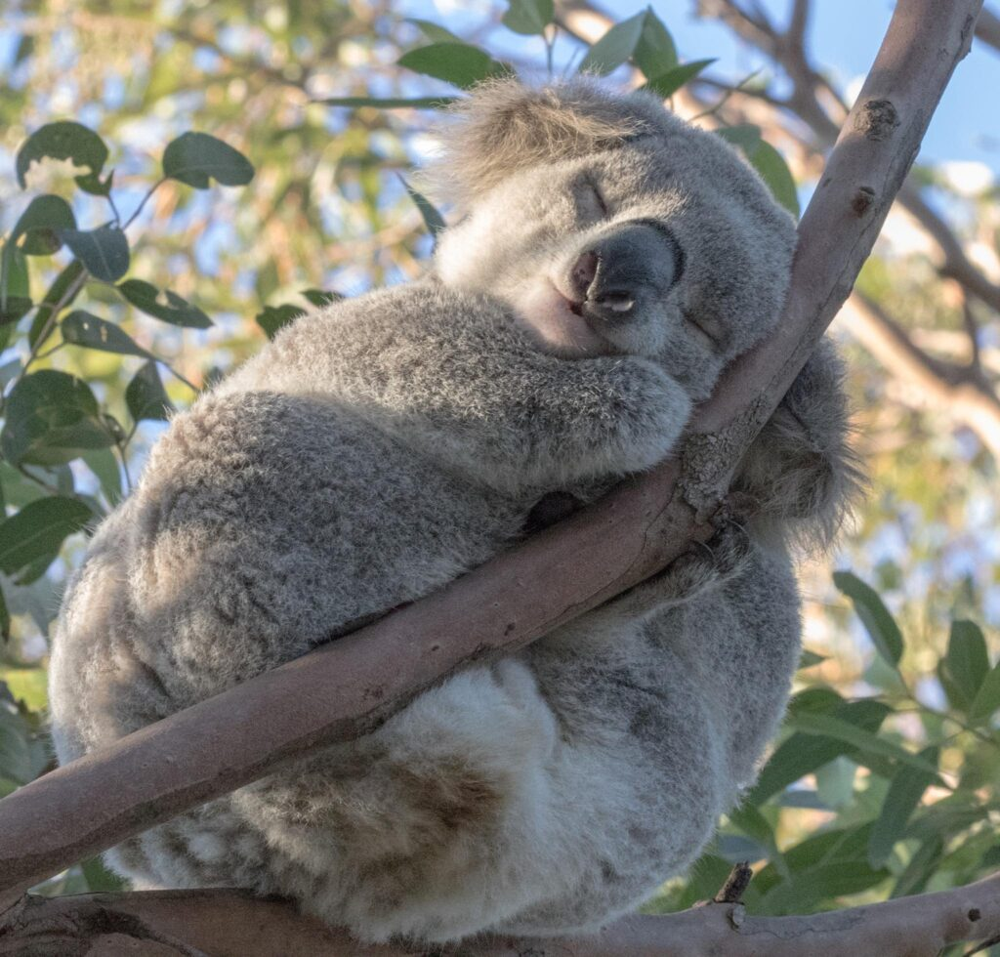

Viven en zonas abiertas de bosques de eucaliptos, cuyas hojas constituyen la mayor parte de su dieta. Debido a que esta dieta aporta una cantidad escasa de nutrientes y calorías, los koalas llevan una vida sedentaria y suelen dormir hasta veinte horas al día. Son animales asociales y solo se da un vínculo entre las madres y sus crías dependientes. Los machos adultos se comunican con fuertes rugidos que intimidan a los rivales y atraen a las hembras. Los machos señalan su presencia con secreciones de unas glándulas odoríferas ubicadas en su pecho. Como en los demás marsupiales, sus crías nacen sin estar desarrolladas por completo y de inmediato se suben al marsupio de sus madres, donde permanecen durante sus primeros seis o siete meses de vida; los jóvenes se destetan por completo cuando tienen un año de edad. Tienen pocos parásitos y depredadores naturales, aunque están amenazados por varios patógenos, como las infecciones por clamidias y el retrovirus koala, así como por los incendios forestales y las sequías.
Es el único representante existente de la familia Phascolarctidae y sus parientes vivos más cercanos son los wombats. Vive en las zonas costeras de las regiones este y sur australianas, en los estados de Queensland, Nueva Gales del Sur, Victoria y Australia Meridional. Es fácilmente reconocible por su cuerpo robusto sin cola, cabeza grande con orejas redondas y peludas y nariz grande en forma de cuchara. Mide entre 60 y 85 cm y pesan de 4 a 15 kg. El color de su pelaje va del gris plata al marrón chocolate. Las poblaciones septentrionales suelen ser de menor tamaño y de un color más claro que las del sur, por lo que se cree que puedan ser una subespecie separada, aunque esta posibilidad está en discusión.
Viven en zonas abiertas de bosques de eucaliptos, cuyas hojas constituyen la mayor parte de su dieta. Debido a que esta dieta aporta una cantidad escasa de nutrientes y calorías, los koalas llevan una vida sedentaria y suelen dormir hasta veinte horas al día. Son animales asociales y solo se da un vínculo entre las madres y sus crías dependientes. Los machos adultos se comunican con fuertes rugidos que intimidan a los rivales y atraen a las hembras. Los machos señalan su presencia con secreciones de unas glándulas odoríferas ubicadas en su pecho. Como en los demás marsupiales, sus crías nacen sin estar desarrolladas por completo y de inmediato se suben al marsupio de sus madres, donde permanecen durante sus primeros seis o siete meses de vida; los jóvenes se destetan por completo cuando tienen un año de edad. Tienen pocos parásitos y depredadores naturales, aunque están amenazados por varios patógenos, como las infecciones por clamidias y el retrovirus koala, así como por los incendios forestales y las sequías.

Existen pruebas de que los aborígenes australianos ya cazaban estos animales y aparecen representados en sus mitos y arte rupestre desde hace milenios. El primer encuentro registrado entre un europeo y un koala se produjo en 1798 y el naturalista George Perry publicó una imagen de este animal en 1810. El botánico Robert Brown escribió la primera descripción científica detallada del koala en 1814, aunque su obra permaneció inédita durante ciento ochenta años. El ornitólogo y artista John Gould ilustró y describió estos animales, dando a conocer la especie al público británico en general y a lo largo del siglo XIX otros científicos ingleses revelaron más detalles sobre su biología.